|
ULTIMOS
D�AS DENTRO DEL HUEVO
Fernando P�rez, 2006
Debido a
un accidente durante los �ltimos d�as de incubaci�n en uno de los
huevos de Geochelone elegans se pudieron tomar im�genes de la
actividad y comportamiento que realiza una tortuga antes de romper y
abandonar el huevo.
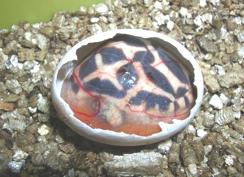
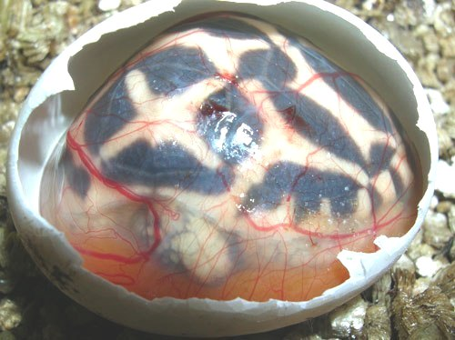
Podemos observar en las
primeras im�genes que el estado que presenta la tortuga dentro de la
membrana alantoidea (o corioalantoidea) es de total letargo,
absorbiendo nutrientes mediante los vasos capilares que rodean la
bolsa. La tortuga se mantiene pr�cticamente inactiva dentro de esta
membrana que tiene la caracter�stica de ser permeable y permitir el
intercambio de gases con el exterior.
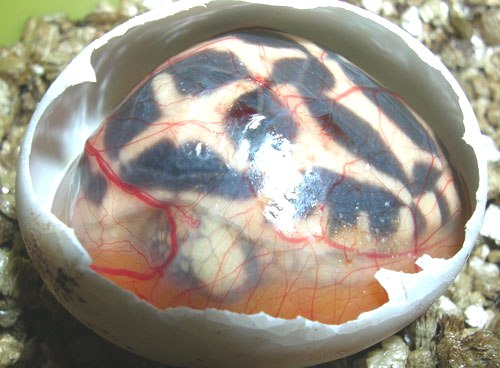
La carencia de chalazas
entre el huevo y la membrana alantoidea se aprecia perfectamente en
estas im�genes, el embri�n se desarrolla totalmente libre en el
interior del huevo. Esta es la primera raz�n por la que cuando
manipulemos los huevos que se est�n incubando sean dejados en la misma
posici�n que la inicial. Si no los posicionamos de la misma forma
da�ar�amos el embri�n seriamente al no tener la protecci�n de las chalazas y la tortuga morir�a.
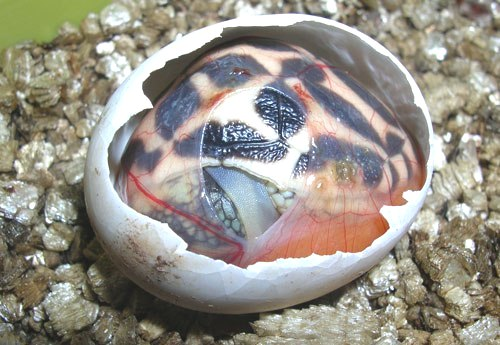
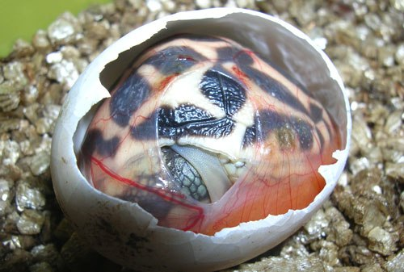
Para evitar perder la
humedad y que el animal se deshidrate se utiliza una bolsita a modo de
invernadero para mantener la humedad alta alrededor del huevo a medio
romper. La tortuga se mueve poco y pr�cticamente sigue dormida e
inactiva.
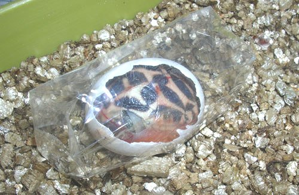
Estamos en el segundo
d�a desde que fue abierto el huevo, la tortuga empieza a encontrarse
m�s activa. La entrada de oxigeno favorece la maduraci�n del animal y
se empieza a romper la membrana que lo envuelve. Sigue manteniendo
poca actividad aunque se mueve de vez en cuando estirando el cuerpo.
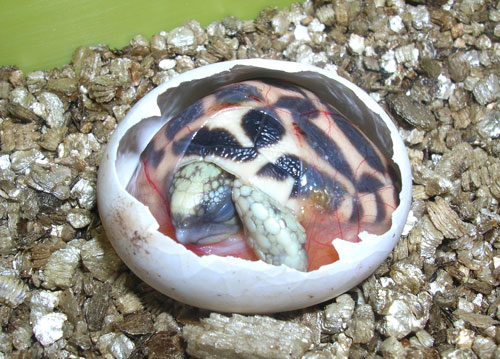
En las im�genes superior
e inferior podemos observar la car�ncula o falso diente utilizado por
todas las tortugas para romper el huevo, est� situado a modo de pico
bajo las narinas. A las dos semanas aproximadamente de su nacimiento
este ap�ndice desaparece, ya que es una
herramienta exclusiva para la labor de abandonar el huevo.
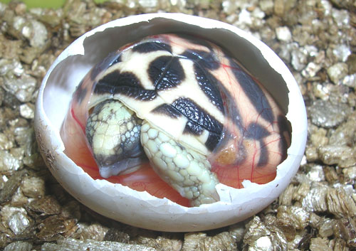
En el tercer d�a, la
tortuga respira sin problemas fuera de la bolsa. Sus movimientos son
lentos. Sigue absorbiendo nutrientes del vitelo y abre los ojos de vez
en cuando. La membrana alantoidea desaparece totalmente.
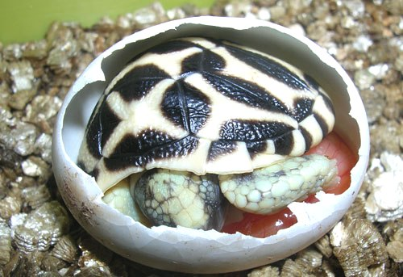
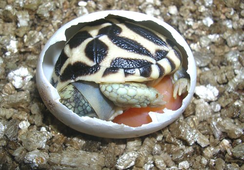
Se puede observar el
tama�o enorme del vitelo en este momento. La tortuga apenas puede
moverse debido a ese impedimento y sigue descansando absorbiendo
nutrientes.
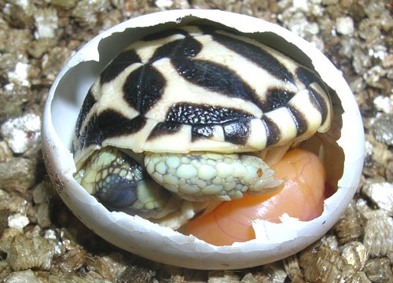
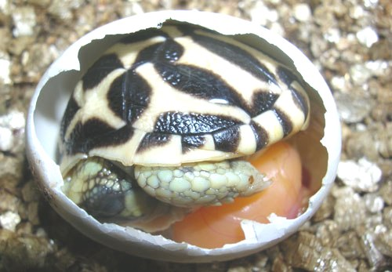
El cuarto y quinto d�a,
la tortuga se mantiene igualmente tranquil. El saco vitelino es m�s
peque�o que en d�as anteriores. El animal abre los ojos durante m�s
tiempo y se muestra m�s activo.
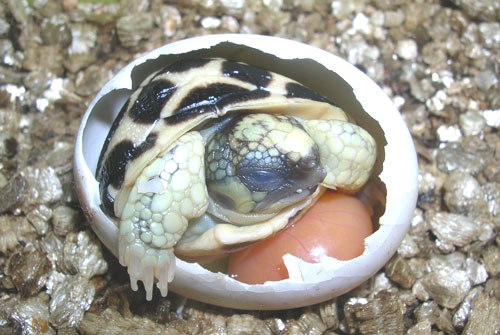
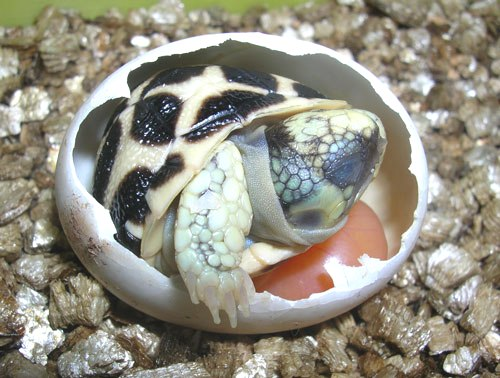
El sexto d�a, el vitelo
ha disminuido mucho. La tortuga se mueve mejor y la actividad es mucho
mayor. Para evitar deshidrataci�n se le ofrece agua con una pipeta y
la bebe sin ning�n problema.
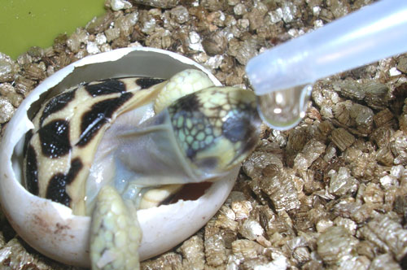
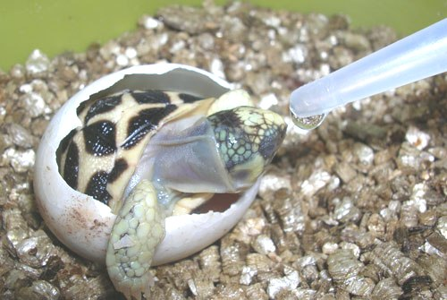
La hidrataci�n eleva la
actividad de la tortuga, que no abandona el cascar�n por el di�metro
del vitelo. Durante m�s de una hora los movimientos del animal logran
quebrar el huevo restante, encontrando f�cil la salida.
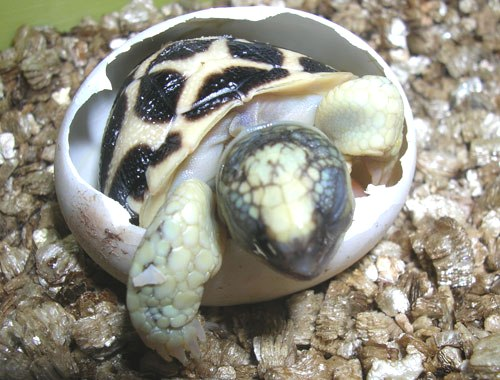
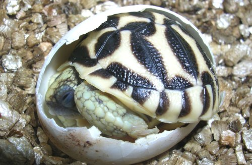
Fuera del cascar�n el
animal descansa largo rato. Se encuentra en perfectas condiciones y
muy activo.
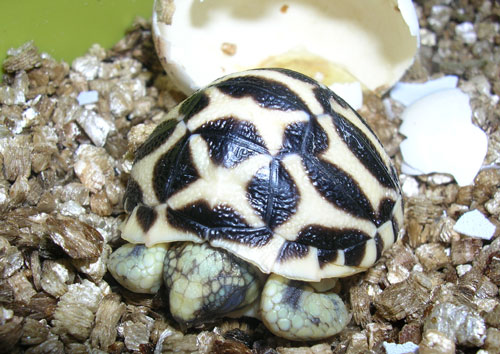
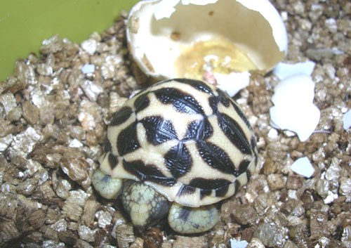
Tama�o del vitelo a la
hora de abandonar el huevo.
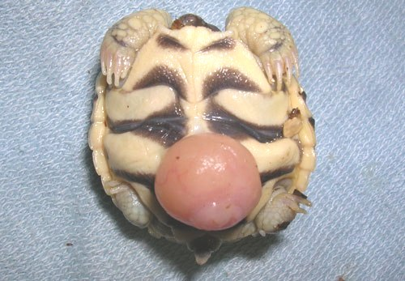
Dos d�as despu�s el
vitelo est� pr�cticamente cicatrizado.
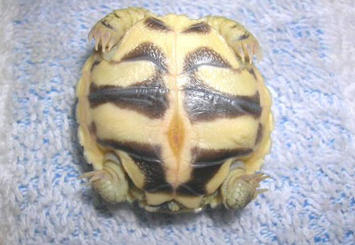
Primera comida.
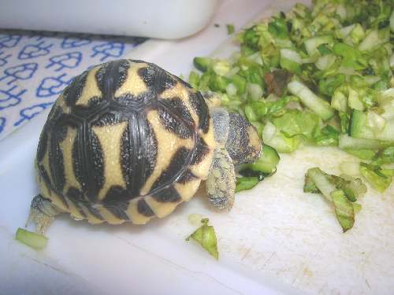
Hidrat�ndose, en segundo
plano, junto a una de sus hermanas.
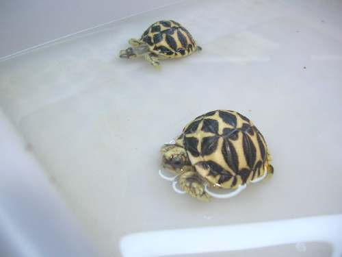
A los cinco meses de
edad y 49 gramos de peso.
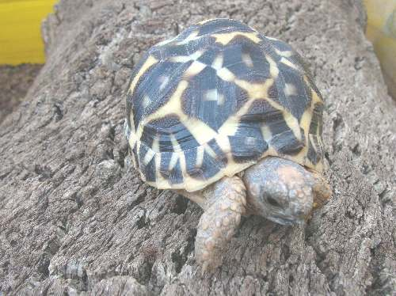
|